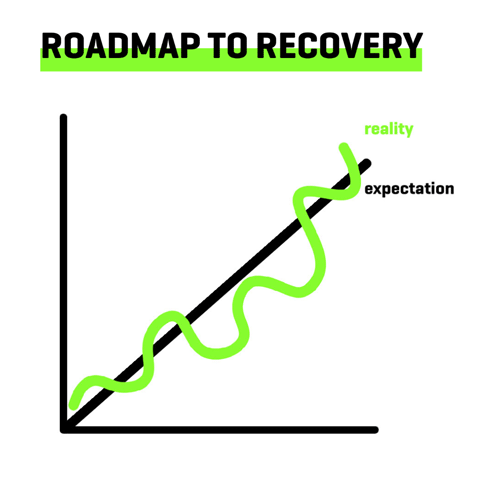

How to Recover From Depression
“When my depression was at its worst, I couldn’t imagine there were other guys like me.” – Age 20, US
“When my depression was at its worst, I couldn’t imagine there were other guys like me.” – Age 20, US
You are not alone. Together we will get through this.
Fighting depression is tough, but it’s not impossible. Depression clouds our thinking, while draining our motivation and energy. To successfully fight depression, we have to find ways to see beyond our negative thoughts, feelings, and hopelessness, and take actions to improve our health.
Recovering from depression requires a multi-pronged approach – working on our personal health and habits, learning to better manage our thoughts, reaching out to others for support, and whenever possible connecting with professional support.
“You wouldn’t attempt to heal a broken leg simply by toughing it out. Treat depression the same way you would treat any other serious illness or injury.”
Even in the most severe cases, depression can be treated. Many men have come back from dark places they never thought they would recover from. The earlier we reach out the better, but it’s also never too late to reach out and take steps toward recovery.
Before we get into the key steps for fighting depression, here are some tips to keep in mind throughout the recovery process:
Depression affects every aspect of our being, impacting our sleep, diet, physical activity, social life, as well as sex and relationships. Making some essential lifestyle changes in these areas is a necessary part of the recovery process.
We can think of these like the metal rebar that reinforces a concrete building – the stronger a foundation we build, the more resilient we are to whatever stressors life throws our way.
If we have a strong foundation, we can better withstand depression and prevent stressful life events from throwing us off course.
Depression can negatively impact our thoughts, leading us to assume the worst about situations, people, and ourselves. This shift in perspective often creeps in so slowly that we do not realize how negative our thoughts have become. In this way, depression can limit our ability to even imagine, let alone hope for, recovery.
In tandem with working on the essential lifestyle tips above, learning different strategies to manage our negative thoughts is crucial to overcoming depression. Talk therapy is especially effective for helping develop healthier, more resilient, and adaptive thoughts.
It may seem daunting to manage our thoughts when depressed, but there are some simple steps we can take to get started.
Finding ways to engage our minds in anything other than negative thoughts is key. Many men find it helpful to have other outlets to:
Don’t underestimate the power each of these can have. Finding ways to relax, enjoy ourselves (even in limited amounts), and interrupt our negative thought loops gives our minds space to rest and heal.
Depression can make us want to isolate ourselves, but to recover, we need supportive people by our side.
Reaching out to others (family, friends, a family doctor, a mental health professional) is often a major turning point in the road to recovery. We can think of recruiting supportive people, like a therapist, as building our personal recovery team.
Often, shame and stigma are the biggest factors standing between us and recovery.
Men tend to carry a lot of self-stigma and imagine worst-case reactions from friends and family, but guys are often surprised by the empathy and compassion others show us.[1]
If you have friends or family members you trust, reach out to them. Often, they already know something is going on and are just waiting for permission to help.
Your recovery team ought to include a health professional. Start by reaching out to your family doctor or a therapist (a professional who is specifically trained to treat mental health issues using different talk therapy techniques).
A family doctor can formally evaluate your symptoms and help rule out other possible medical conditions, such as hypothyroidism, that present with symptoms that are similar to depression. They can provide you with medication (if deemed appropriate) and help connect you with other local resources and treatment options, like talk therapy or support groups.
If you’re reluctant to try therapy or just want to know more about it, our Guide to Therapy for Men can help dispel many outdated myths and misconceptions that often prevent or delay guys from trying it until their depression gets much worse.
The recovery process typically involves making a number of big changes in our lives. These changes need to be cemented as new habits so that we not only benefit from them in the moment, but in the future as well.
Our Guide to Building Healthy and Sustainable Habits can help us put into place the new life patterns we create during the recovery process.
Recovery doesn’t usually involve a major pivotal moment when everything is all of a sudden better. In reality, improvement can be slow. This is why it’s really important to be aware of the positive changes that we’re making during recovery – to remind ourselves that we are getting better.
Some guys like to keep a journal or notes on their phone to see how they are doing week-to-week to monitor their progress.
Coming back to retake our Depression Check can also help us track our symptoms and progress.
Friends and family can also help encourage us as they may see signs of improvement we may not notice.
Over time, we’ll start to know our efforts toward recovery are working when we:
Remember to give yourself credit for the effort you’re putting in to get better, and for even the small signs of improvement that you notice.
If you notice you’ve plateaued or feel like things may be getting worse – it’s time to get professional help (if you haven’t already) by consulting with your family doctor and/or therapist.
Recovery from depression doesn’t follow a straight line, and that’s okay. There are going to be ups and downs along the way. There may be moments where we lose hope, but learning to weather these storms (without having them throw us off course) is part of the recovery process.
When it comes to a timeline for recovery, like a herniated disc in our back or a torn tendon in our knee, there aren’t exact guidelines for how long it takes to recover from depression – it’s going to be different for each person and their particular circumstances.
Some recovery strategies may help right away, some may not work as quickly as we hope, and others may not be right for us. This is normal – treatment and recovery from depression are not ‘one size fits all’. Even learning what doesn’t help can provide direction for what to try next.
We all want to get better as fast as we can, but treatment can sometimes take a few weeks before we start to notice changes. Keep in mind that we are often healing even before we notice it:
When each day feels like a struggle, waiting weeks or months to feel real improvement can be frustrating. This is why it is best to reach out before you hit rock bottom.
Depression can make setbacks seem insurmountable. It’s easy to fall into the trap of thinking, ‘I’m still not at 100%, so I’m not better at all’ – but progress is incremental. And it’s much better to feel ‘okay’ or ‘slightly down’, than to ‘feel like shit’.
Be prepared to encounter the following situations and try to not let them stand between you and recovery:
Fear of Reaching Out
Going to someone for support and fearing that they won’t provide the help you want or need is a common worry that many guys have. Remember, depression clouds our thinking and we may be fearing far worse reactions than we will actually get when we reach out.
Long Waitlists
Waiting through long waitlists (that can last weeks or months) to access professional services or supports can be frustrating, so it’s important to get on waitlists for a therapist or other support as early as we can. In the meantime, there are plenty of Tips and Skills we can work on on our own.
Insurance and Finances
Navigating health insurance options before accessing services, or having to sacrifice other areas of your life to focus on the costs of prioritizing your health, can be a challenging process. Sorting through health insurance coverage can be confusing even when our minds are at their sharpest, let alone when we don’t have much energy. Be patient while trying to sort out your options.
Frustrations with not seeing immediate results
We may be tempted to look for quick fixes (like new or unproven treatment options), but the reality is that there are no quick fixes.
One way to help keep us motivated is to learn from others who once felt completely lost and overwhelmed by depression, yet managed to recover.
“When we get knocked down, we get back up. When we feel like we’ve hit a brick wall, we ask a friend for help getting over or around it.”
Whenever you start to think recovery isn’t possible, come back to ThriveWell and read stories from guys who’ve felt the same way, yet were able to recover.
We have over 100 stories from men, from all walks of life, who have fought depression and other mental health issues. Take the time to find stories you connect with. Trust in your ability to recover as well.
“I never thought I would recover. I remember all those long days when I felt completely hopeless, when I could barely get out of bed. I didn’t know I could still recover, but I’m so grateful I kept trying.”
Our site features an anonymous Depression Check based on a standardized depression screening tool.
Though not enough to provide a diagnosis, it can teach you about the most common symptoms of depression and help you see the impact depression may be having on your life.
After completing the Depression Check, our site will direct you toward next steps and appropriate resources.
For lots of guys, using the Depression Check is the first time they fully realize they may be dealing with something more serious than everyday stress or sadness.
If you don’t really know where to start, take the Depression Check and go from there.
References
Move for something that matters! Between June 1–15, walk, run, bike, or hike for men's mental health.
Let's Step Up for our dads, brothers, partners, sons, uncles, friends, co-workers — and ourselves.